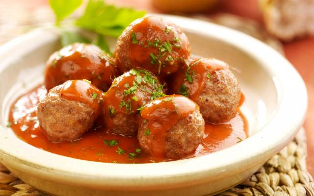

Balletjes in tomatensaus, da's wellicht één van de allerlekkerste
gerechten uit onze Vlaamse keuken. Voor de tomatensaus heb je wel heel wat
ingrediënten nodig, want alleen zo krijgt de saus heel veel smaak. Dat is
het geheim van een top-tomatensaus. Gehaktballetjes maken is helemaal niet
moeilijk, en als je de twee nadien samenbrengt in één pot dan is het pas
echt smullen geblazen! De balletjes smaken heel lekker met bv. verse
aardappelpuree, maar dat kunnen net zo goed frietjes of rijst zijn. Dat
beslis je zelf!